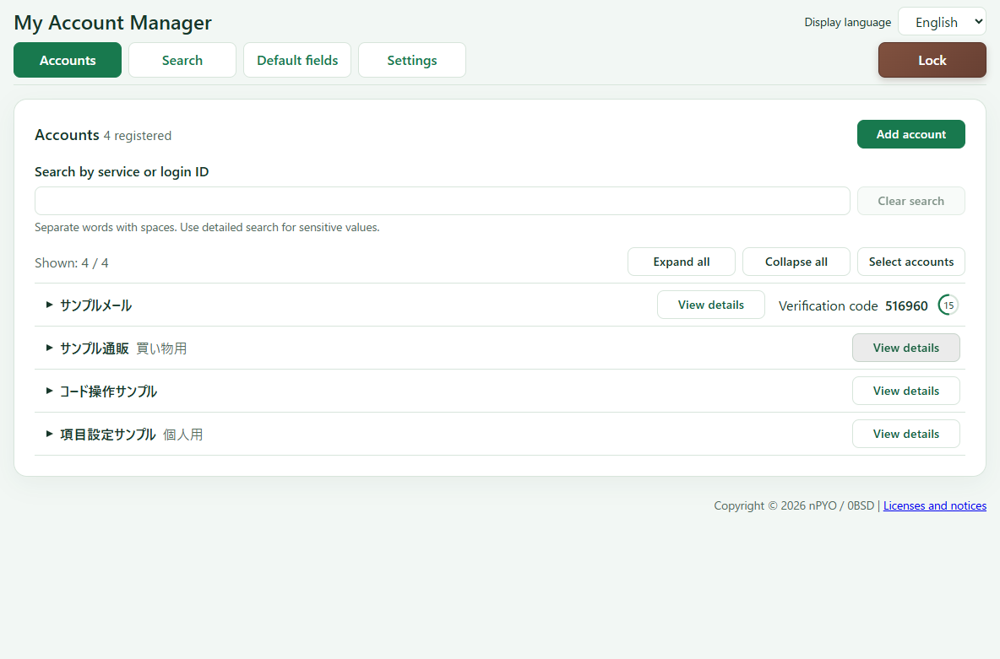
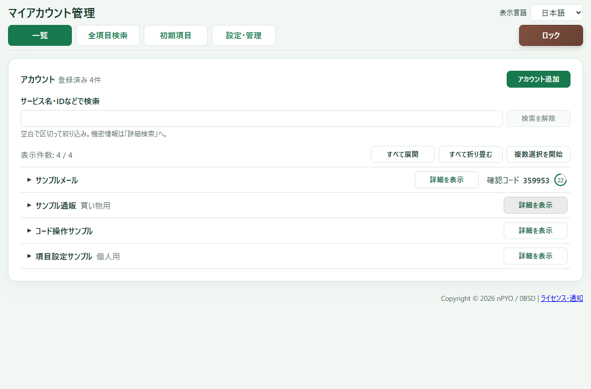
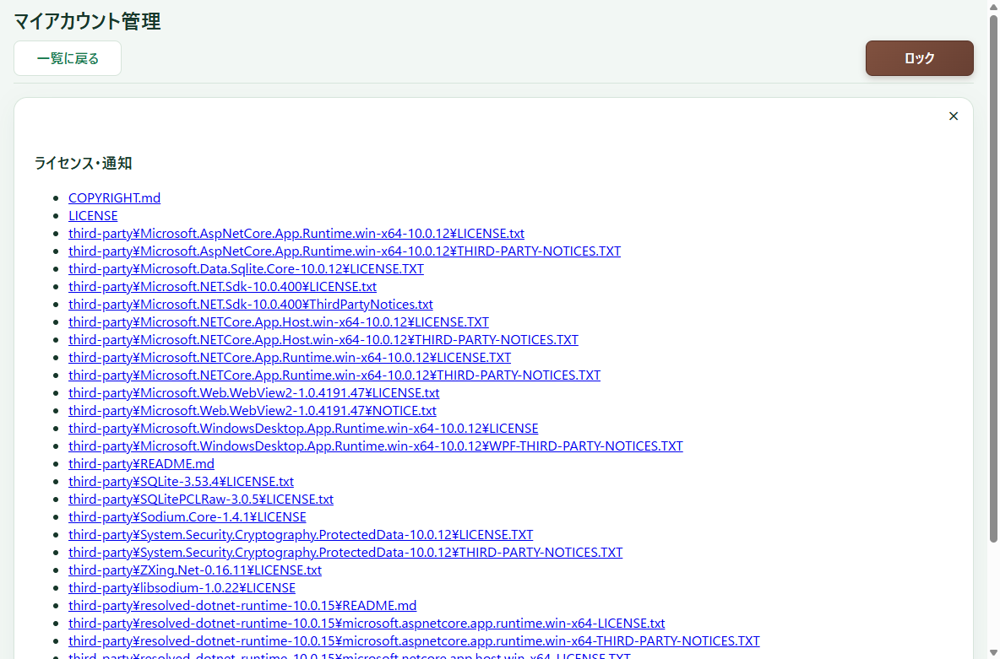
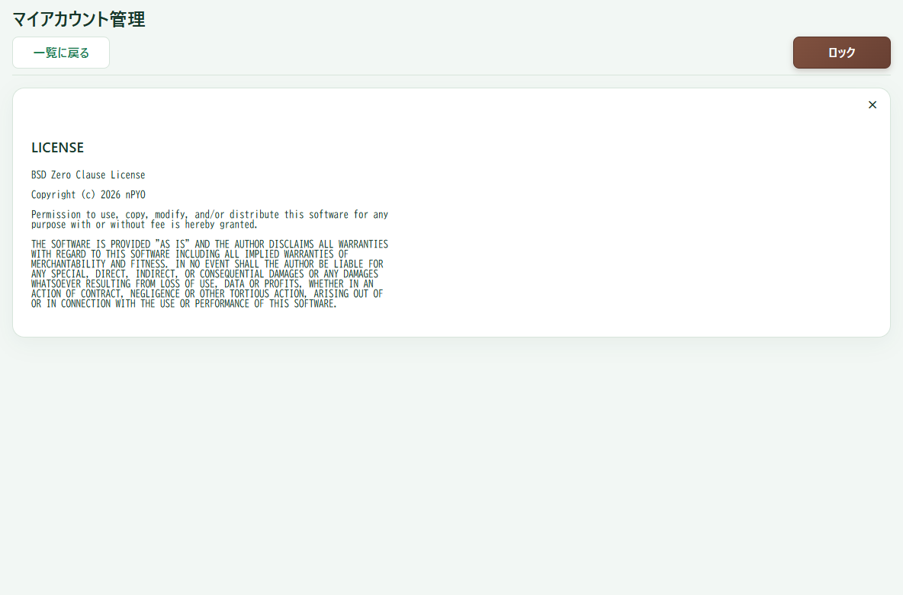
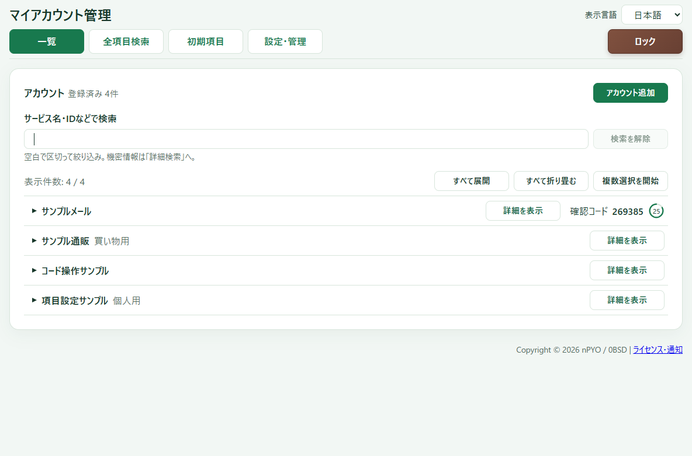
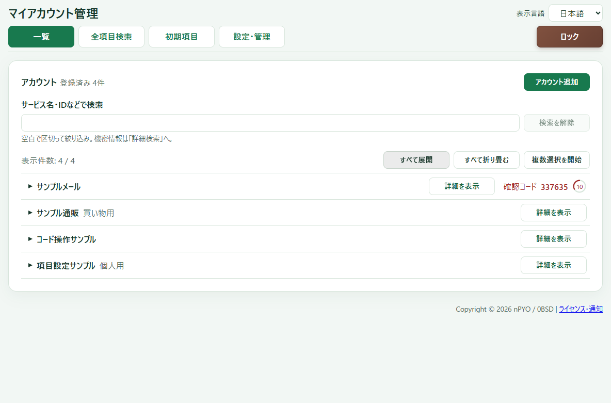
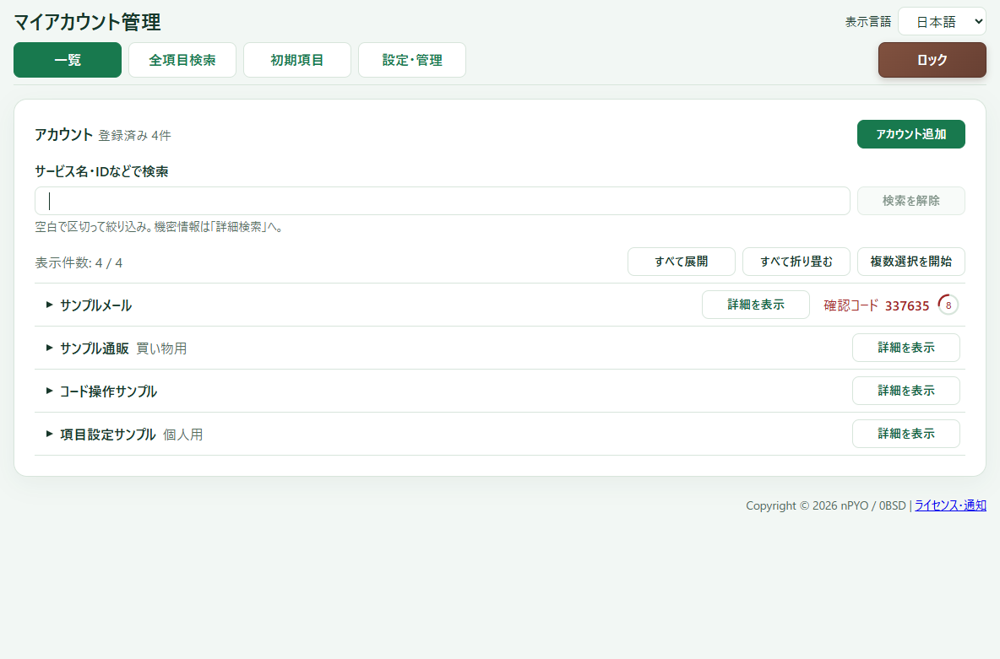
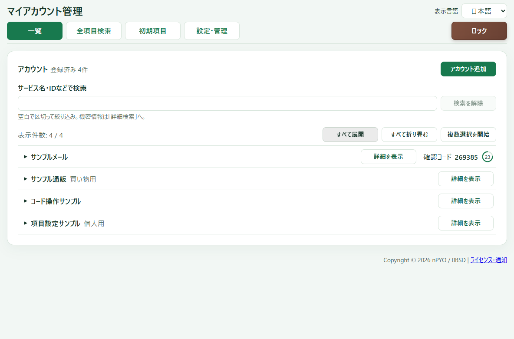
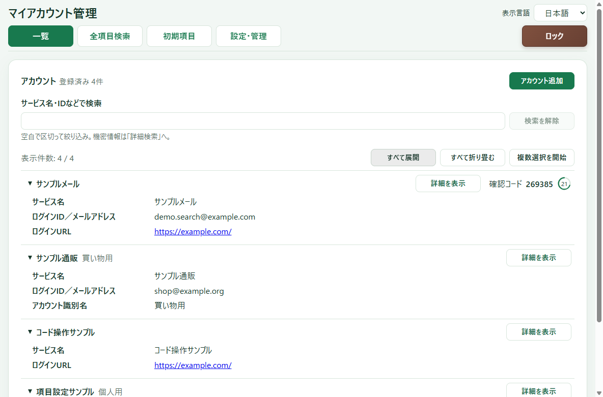

45表示言語・ライセンス・キーボード
表示言語を切り替え、ライセンスを読み、キーボードで操作します。
手順一覧を開く（10手順）
1表示言語を選ぶ
右上の［表示言語］で English を選択します。
2英語表示を確認する
ボタンや説明が英語になります。登録したサービス名や値はそのままです。

3日本語に戻す
Display language で［日本語］を選びます。ページ下の［ライセンス・通知］を開きます。

4通知一覧を読む
読みたい文書を選びます。例では LICENSE を開きます。

5ライセンス本文を読む
LICENSE 本文が表示されます。［一覧に戻る］でアカウント一覧へ戻れます。

6キーボード操作の開始位置を選ぶ
一覧の検索欄をクリックします。入力位置が検索欄にあります。

7Tabで次の操作へ進む
Tab を押すと、この例では［すべて展開］へフォーカスが移ります。

8Shift+Tabで前へ戻る
Shift+Tab を押すと検索欄へ戻ります。

9Enterで実行する
もう一度 Tab で［すべて展開］を選び、Enter を押します。

10実行結果を確認する
各アカウントの概要が展開されます。
